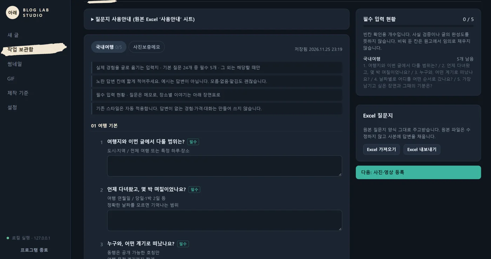
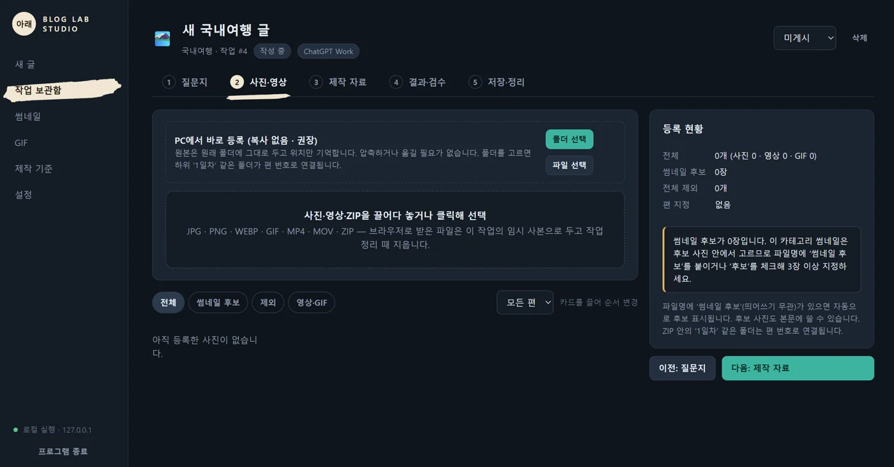

04 / SOLO SIDE PROJECT · IN PROGRESS
BLOG LAB STUDIO
AI 기반 개인 블로그 콘텐츠 제작 워크스테이션
이민재 담당 · 현재 개발 중
제품 기획·구현·검수 / Windows 로컬 / v0.2.2 실사용 검증
01
선택한 카테고리에 맞춰 질문지를 불러옵니다

국내여행·해외여행·맛집·클라이밍마다 필요한 질문이 다릅니다. 국내여행 화면에서는 일정과 장소를 입력하고 누락된 필수 항목을 확인합니다. 기존 Excel 양식으로도 답변을 가져오거나 내보낼 수 있습니다.
02
원본 위치를 유지하며 회차에 쓸 사진을 정리합니다

폴더 또는 파일을 선택하고 편별 순서, 썸네일 후보와 제외 여부를 정합니다. 앱이 제작 자료를 구성하면 사용자가 Work에서 해당 폴더를 열어 제작을 요청합니다. 돌아온 원고와 썸네일은 앱에서 검수하고 저장합니다.